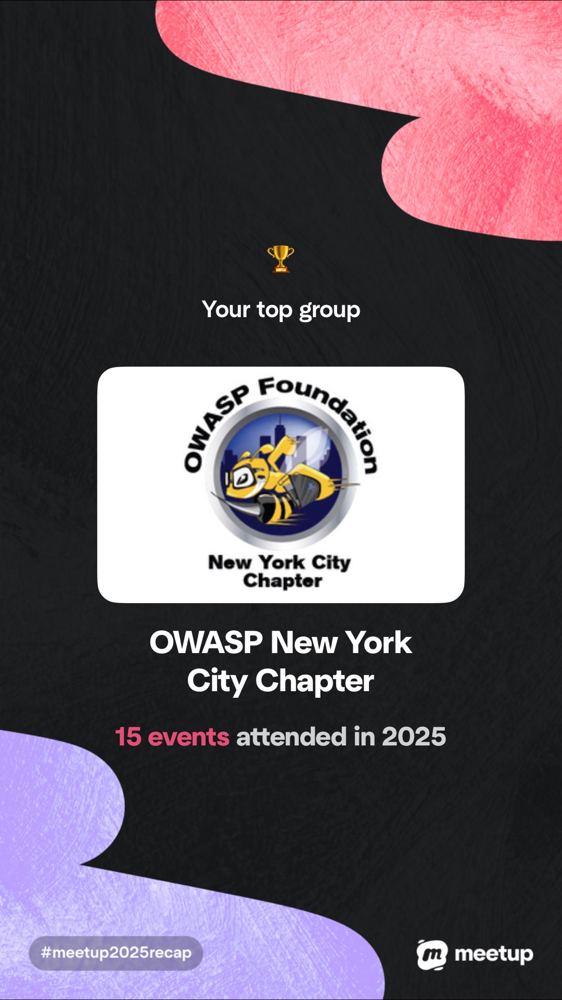
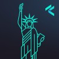

I currently host the following events to empower founders in the product security space to achieve the following.
Open Web Application Security Project (OWASP) New York City Chapter:The Open Worldwide Web Application Security Project (OWASP) Foundation’s mission is to power secure software by serving as a global open community that provides education, tools, and collaborative resources to improve software security.
Threat Modeling Connect New York City:Threat Modeling Connect is a global threat‑modeling community of security practitioners with a mission to strengthen how organizations understand, communicate, and reduce security risk.
